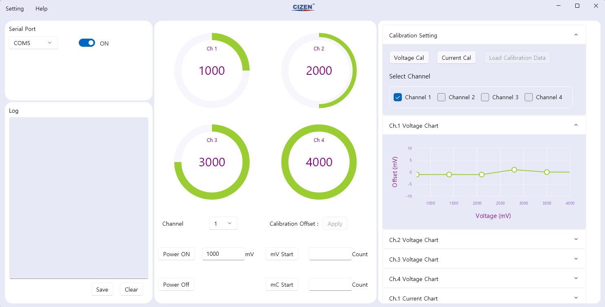

Introduce

DPS Software는 윈도우 10 및 윈도우 11에서 실행 가능한 소프트웨어로, WinUI3를 사용하여 동적인 그래픽 사용자 인터페이스를 제공합니다.
주요 기능
다중 채널 제어
DPS 보드를 개별적으로 제어할 수 있으며, 4개의 채널에 대해 **전압(Voltage)**과 전류(Current) 값을 정확하게 측정할 수 있습니다.
각 채널의 설정 값을 실시간으로 모니터링할 수 있습니다.
정확한 Calibration 기능 지원
Calibration 기능을 통해 DPS 보드를 더욱 정교하게 제어할 수 있습니다.
미리 저장된 Calibration 설정을 불러와 사용할 수 있으며, 이를 통해 반복 작업의 정확도를 높일 수 있습니다.
Memory 기능
DPS 보드의 ID와 펌웨어(FW) 버전을 확인할 수 있는 기능을 제공합니다.
저장된 보드 정보를 쉽게 관리할 수 있으며, 보드 설정을 저장하거나 불러올 수 있습니다.
사용자 친화적인 UI
WinUI3 기반 UI로, 직관적인 사용자 경험(UX)을 제공합니다.
사용자가 실시간 제어 및 데이터 시각화를 쉽게 할 수 있도록 설계되었습니다.
로그(Log) 관리 시스템
소프트웨어 사용 중 발생하는 오류 및 이벤트 로그를 자동으로 기록하여 문제를 빠르게 파악할 수 있습니다.